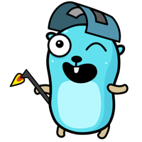
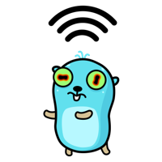
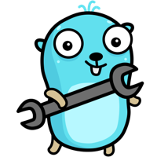

Hello!
Everything at home, one tap away.

Only at home. These work on the home Wi-Fi, or away with the VPN switched on.
Something broken? Tell whoever looks after the server: the gopher with the wrench is on it.
Everything at home, one tap away.

Only at home. These work on the home Wi-Fi, or away with the VPN switched on.
Something broken? Tell whoever looks after the server: the gopher with the wrench is on it.